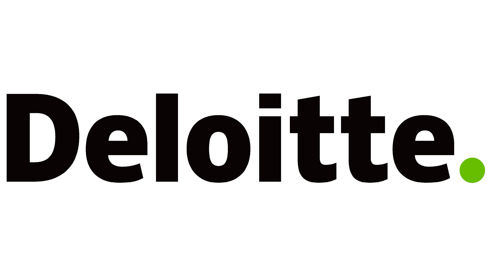

Senior Analyst
Oct 2020 - Present
Intern
May 2019 - June 2019
You can reach out to me @+91-8300146426 or shriram027@gmail.com
Built a website showcasing the All Time XI chosen by various cricketers. Added an analytical feature showing top selections. It is built with a python backend.
Started a sports blog